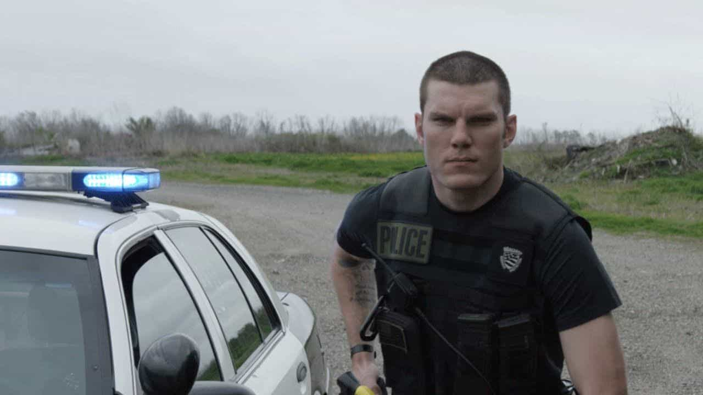

Maybe you didn’t deserve it but there you are, talking to the cops. If you answer wrong you can earn a ticket, an ass kicking, jail or all three. Everyone thinks they know what to do but, having worn a badge for over five years, I can say with authority that knowing a few things can definitely help you avoid trouble.
First, a little about me. No, I never shot anyone but my partners did. I had my share of fights and pursuits, which I always won. I never had to violate anyone’s rights to get my job done because it was too easy to arrest legit violators without cheating; people are idiots. I never experienced any of the ratchetness that you see on YouTube except when female officers came out to play.
My motto was always, “manners are nice, politeness is neat but have a plan to kill everyone you meet.”
Who you are up against
Not all cops are fuckwits like the ones featured online. In most cases, the officer has had extensive training in legally getting you to do as he wishes without even touching you. For example, he has probably studied the Reid Interrogation Technique and “Gerbil Voodoo.” Also, his squared-away uniform is designed to stimulate your natural authority-compliance tendencies that you learned in school. He has also dealt with your exact same crime dozens of times over his career and has heard every single explanation and lie you could imagine.
If you decide to step out of line, he and his partners are schooled in several ways to kick your ass and can easily, legally kill you with the tools on his belt and a few hidden ones that you will never see coming. He runs through scenarios in his head all day long, pre-planning how he will kill you when the time comes. He is way readier than you. You are entering the situation vastly out-gunned, mentally and physically.
You mall-ninjas think that since you spent a month earning a blackbelt at a McDojo and are “pretty good at talking your way outta shit” that you may win the encounter, but this isn’t your mom or a high school hall monitor you are trying to out-smart. Law enforcement officers use these skills daily in the real world and they are better than you at it.
They may look dumb but in many cases that is actually just a front to get you to become overconfident so you’ll screw up. For example, when I was on patrol I used to wear dark-frame glasses with prescription-free lenses in them because they made me look like a nerd. People assumed I was stupid and would try to pull more shit, which I easily saw through and got more arrests. Boom!
Would you ever enter the Octagon against a top-ranked professional MMA fighter? That is who you are against when you try to match wits against the cops. They do this every day.
Rule #1: Shut the fuck up!
The Miranda warning was written to let stupid people know that the only reason the cops are talking to you is that they do not yet have enough probably cause to arrest you. The only way they will get that probable cause is to 1) ask questions or 2) look for evidence. Eliminate #1.
Once they have probable cause, you go to jail, no more talking. Cry all you want about your attorney, which you don’t really have, and something about the officer’s mother, but he can’t hear you because he has already faded a Christian radio station to the back seat of his patrol car to drown out your pathetic cries.
Remember, you cannot say anything to the cops to make yourself sound LESS guilty. Everything you say will be twisted to make you sound more guilty.
Here is an example: “I stopped you today because you were speeding. Is there a reason why you were going so fast?” Here you think you’ll provide some bad-ass excuse to prevent a ticket like, “Yes officer, your wife is waiting for me,” or whatever. But no, every answer you give to the, “Why were you speeding?” question is just an admission that you were, in fact speeding. Correct response: silently hand him your license.
In America, the Fifth Amendment keeps you from having to serve as a witness against yourself, meaning that you are not required to say shit to the police, ever. If you are the suspect in a crime, you can hand them your ID and do nothing else until the encounter is over. If an officer wants to stop you and “just ask a few questions,” you can say, “No thanks, am I being detained?” If the answer is anything but YES, you are free to go.
“Can I resist?”
No you cannot. The cops can stop you for a reasonable amount of time to conduct a brief investigation to determine if a crime has occurred or is about to occur, generally referred to as a Terry Stop. If they detain you longer or arrest you “for nothing,” don’t resist, ever. Doing so risks your health and safety. The time to resist is later in court after you obtain legal representation.
During a traffic stop, can being silent get you a bigger ticket? Yes. Can being compliant sometimes earn a little goodwill? Perhaps but 90% of the time, a cop has already decided, before he pulled you over, if you were going to get a ticket or not.
“But Wayne, I’m innocent, I have nothing to lose by talking.”
My dear moon calf, yes you do. You see, cops have the task of rounding up suspects for the courts to try. They do not care if you are guilty or not—they care if there is probable cause to arrest you. Once you are arrested, they can call the case solved and move on. There are thousands of cases where the wrong person has not only been arrested but convicted, because the cops got them talking and they said something contradictory (suspicious) and ended up in jail.

He isn’t reaching for your participation trophy
Conclusion
Don’t do their job for them, make the cops work. The cops won’t be impressed with your legal knowledge, your ability to quote case law or the fact that your personal lawyer is a stud. None of that Sovereign Citizen bullshit will help you either.
You are facing a trained killer who got into the profession because he has a capacity for violence and has a desire to use it for the good of society. He trains, practices and constantly daydreams about ways to make you spill your guts and admit guilt in ways you can’t even imagine. The best hope you have in getting out of this encounter unscathed is never doing anything illegal, shutting your gob, and not resisting.
Read Next: Female Police Officers And Soldiers Reduce Everyone’s Safety